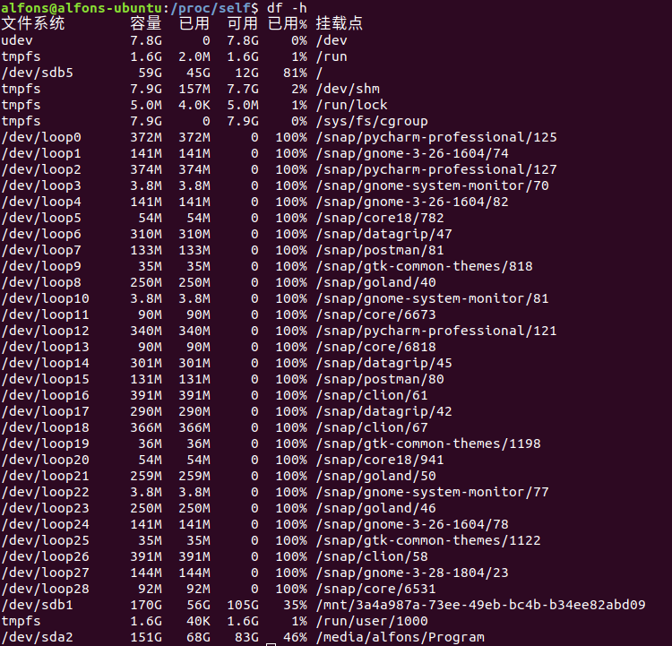

Linux系统编程:文件_文件的挂载
在Linux中，文件的目录层次是一个树状的形式，根路径为 /。如果需要 使用磁盘上的新的分区，就需要将分区通过 挂载的方式挂上目录树。

挂载信息的查看
在Linux中，一切皆文件。挂载信息也不例外，可以通过查看 /proc/mounts 文件了解挂载信息。
$ cat /proc/mounts
sysfs /sys sysfs rw,nosuid,nodev,noexec,relatime 0 0
proc /proc proc rw,nosuid,nodev,noexec,relatime 0 0
udev /dev devtmpfs rw,nosuid,relatime,size=8169156k,nr_inodes=2042289,mode=755 0 0
devpts /dev/pts devpts rw,nosuid,noexec,relatime,gid=5,mode=620,ptmxmode=000 0 0
tmpfs /run tmpfs rw,nosuid,noexec,relatime,size=1638264k,mode=755 0 0
/dev/sdb5 / ext4 rw,relatime,errors=remount-ro,data=ordered 0 0
securityfs /sys/kernel/security securityfs rw,nosuid,nodev,noexec,relatime 0 0
tmpfs /dev/shm tmpfs rw,nosuid,nodev 0 0
...
取其中一条来看看 /dev/sdb5 / ext4 rw,relatime,errors=remount-ro,data=ordered 0 0
- /dev/sdb5 - 已挂载的设备名，或者说是文件系统。
- / - 表示挂载点，或者说是目录
- ext4 - 表示挂载的文件系统的类型
- rw,relatime,errors=remount-ro,data=ordered - 挂载标志，表示在该文件系统上可以进行的操作
- 0 - 第一个0的位置表示dump将会对文件系统备份所进行的操作。
- 0 - 第二个0的位置表示在系统引导时，用于控制fsck对文件系统的检查顺序。
挂载
与挂载相关的系统调用包括：mount、umount、umount2。
#include <sys/mount.h>
int mount(const char *source, const char *target,
const char *filesystemtype,
unsigned long mountflags, const void *data);
int umount(const char *target);
int umount2(const char *target, int flags);
filesystemtype 参数包含了很多类型，不一一介绍了。
在正常使用时，我们通过 mount命令 来进行挂载操作。
下面会通过 mount命令 的例子来说明各类的挂载方式的不同。
多个挂载点(目录)挂载单个文件系统
在 多个挂载点(目录)挂载单个文件系统 有点类似于软链接和硬链接的方式。
绑定的两个目录，如果在一个目录中改变文件，那么在另一个目录中能够产生相同的变化。
alfons@alfons-ubuntu:~/Documents/mount_test$ sudo mount /dev/sdb1 ./test_1
alfons@alfons-ubuntu:~/Documents/mount_test$ sudo mount /dev/sdb1 ./test_2
alfons@alfons-ubuntu:~/Documents/mount_test$ cat /proc/mounts | grep sdb1
/dev/sdb1 /home/alfons/文档/mount_test/test_1 ext4 rw,relatime,data=ordered 0 0
/dev/sdb1 /home/alfons/文档/mount_test/test_2 ext4 rw,relatime,data=ordered 0 0
alfons@alfons-ubuntu:~/Documents/mount_test$ tree . -L 2
.
├── test_1
│ └── lost+found
└── test_2
└── lost+found
alfons@alfons-ubuntu:~/Documents/mount_test$ touch ./test_1/hello
alfons@alfons-ubuntu:~/Documents/mount_test$ tree . -L 2
.
├── test_1
│ ├── hello
│ └── lost+found
└── test_2
├── hello
└── lost+found
上面将sdb1同时绑定了 test_1 和 test_2 挂载点，在 test_1 中新建一个文件 hello，在 test_2 中也出现了。
单个挂载点(目录)挂载多个文件系统
Linux现在允许同一挂载点进行多次挂载，每次新的挂载都会隐藏之前可见于挂载点下的目录子树。卸载最后一次挂载时，挂载点下上一次挂载的内容会再次显示。
alfons@alfons-ubuntu:~/Documents/mount_test$ sudo mount /dev/sdb5 ./test_1
alfons@alfons-ubuntu:~/Documents/mount_test$ tree ./test_1 -L 1
./test_1
├── bin
...
└── vmlinuz.old -> boot/vmlinuz-4.15.0-49-generic
23 directories, 5 files
alfons@alfons-ubuntu:~/Documents/mount_test$ sudo mount /dev/sdb1 ./test_1
alfons@alfons-ubuntu:~/Documents/mount_test$ tree ./test_1 -L 1
./test_1
├── AlgorithmsAreaNotes
├── C++Code
...
├── hello
└── lost+found
9 directories, 2 files
alfons@alfons-ubuntu:~/Documents/mount_test$ sudo umount /home/alfons/文档/mount_test/test_1
alfons@alfons-ubuntu:~/Documents/mount_test$ tree ./test_1 -L 1
./test_1
├── bin
...
└── vmlinuz.old -> boot/vmlinuz-4.15.0-49-generic
23 directories, 5 files
挂载标志的选择
使用 -o 参数，可以限制挂载点内的文件的属性，如限制为不可执行程序的文件系统。
alfons@alfons-ubuntu:~/Documents/mount_test$ sudo mount /dev/sdb1 ./test_1
alfons@alfons-ubuntu:~/Documents/mount_test$ sudo mount -o noexec /dev/sdb1 ./test_2
alfons@alfons-ubuntu:~/Documents/mount_test$ cat /proc/mounts | grep sdb1
/dev/sdb1 /home/alfons/文档/mount_test/test_1 ext4 rw,relatime,data=ordered 0 0
/dev/sdb1 /home/alfons/文档/mount_test/test_2 ext4 rw,noexec,relatime,data=ordered 0 0
alfons@alfons-ubuntu:~/Documents/mount_test$ cp /bin/echo ./test_1
alfons@alfons-ubuntu:~/Documents/mount_test$ tree . -L 2
.
├── test_1
│ ├── echo
│ ├── hello
│ └── lost+found
└── test_2
├── echo
├── hello
└── lost+found
20 directories, 6 files
alfons@alfons-ubuntu:~/Documents/mount_test$ ./test_1/echo "hello"
hello
alfons@alfons-ubuntu:~/Documents/mount_test$ ./test_2/echo "hello"
bash: ./test_2/echo: 权限不够
如上面的过程，两个挂载点绑定了同一个设备，只不过 test_2 目录设置了 noexec参数，表示的是不可以在此目录下执行可执行程序。
绑定挂载
绑定挂载(--bind) 和 硬链接 的方式非常相似，不过比硬链接的方式更加的强大。
- 可以绑定跨文件系统的挂载点，而硬链接的方式则不行。
- 可以对目录进行绑定，而硬链接不能链接目录。
alfons@alfons-ubuntu:~/Documents/mount_test$ mkdir ./test_1/d
alfons@alfons-ubuntu:~/Documents/mount_test$ touch ./test_1/d/e
alfons@alfons-ubuntu:~/Documents/mount_test$ sudo mount --bind ./test_1 ./test_2
alfons@alfons-ubuntu:~/Documents/mount_test$ tree .
.
├── test_1
│ └── d
│ └── e
└── test_2
└── d
└── e
递归绑定挂载
默认情况下，一个挂载点下的子挂载点 不会随着绑定挂载的执行而绑定到新的挂载点上，如果需要 递归的挂载子挂载点目录，则需要使用 --rbind 参数。
alfons@alfons-ubuntu:~/Documents/mount_test$ mkdir sub
alfons@alfons-ubuntu:~/Documents/mount_test$ touch ./sub/bbb
alfons@alfons-ubuntu:~/Documents/mount_test$ touch test_1/aaa
alfons@alfons-ubuntu:~/Documents/mount_test$ mkdir test_1/sub
alfons@alfons-ubuntu:~/Documents/mount_test$ sudo mount --bind ./sub/ ./test_1/sub/
alfons@alfons-ubuntu:~/Documents/mount_test$ tree
.
├── sub
│ └── bbb
├── test_1
│ ├── aaa
│ └── sub
│ └── bbb
└── test_2
4 directories, 3 files
alfons@alfons-ubuntu:~/Documents/mount_test$ sudo mount --bind ./test_1 ./test_2
alfons@alfons-ubuntu:~/Documents/mount_test$ tree
.
├── sub
│ └── bbb
├── test_1
│ ├── aaa
│ └── sub
│ └── bbb
└── test_2
├── aaa
└── sub
5 directories, 4 files
如上面的例子，新建了一个 sub目录，并绑定到 ./test_1/sub 目录，再将 test_2目录 与 test_1目录 绑定，结果test_2下并没有 ./sub/bbb文件。
需要使用 --rbind参数 递归挂载子挂载点。
alfons@alfons-ubuntu:~/Documents/mount_test$ sudo mount --rbind ./test_1 ./test_2
alfons@alfons-ubuntu:~/Documents/mount_test$ tree
.
├── sub
│ └── bbb
├── test_1
│ ├── aaa
│ └── sub
│ └── bbb
└── test_2
├── aaa
└── sub
└── bbb
5 directories, 5 files
虚拟文件系统tmpfs
虚拟文件系统是 在内存中存在的一种文件系统，文件保存在内存中，而不是磁盘上。
这样做的好处在于，访问文件的速度非常快，不用经过磁盘的检索过程。在内存耗尽的情况下，会使用swap空间来存储文件。
坏处也有，保存的文件都是临时的，一旦断电，文件将消失。
tmpfs文件系统的特殊用途：
- 由内核内部挂载的隐形tmpfs文件系统，用于实现 System V 共享内 和 共享匿名内存映射。
- 挂载于/dev/shm的tmpfs文件系统，为glibc用以实现POSIX共享内存和POSIX信号量。
总结
- 磁盘分区不能直接使用，需要将其挂载到目录树的某一个位置才能对磁盘进行操作。
- 挂载的类型有很多，可以限制文件在挂载点的行为。
- 内存文件系统存在于内存中，由于不需要进行磁盘操作，因此，访问速度很快。但是，一旦崩溃，存储在内存文件系统中的文件将消失。